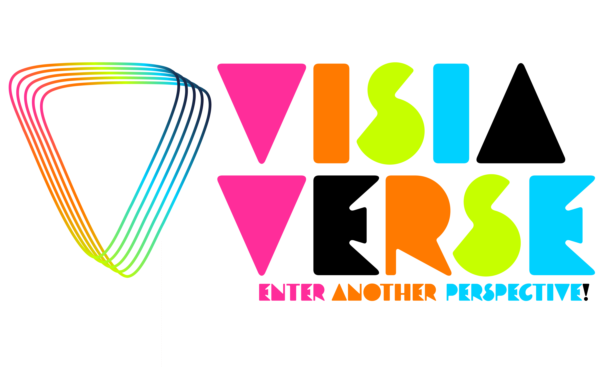
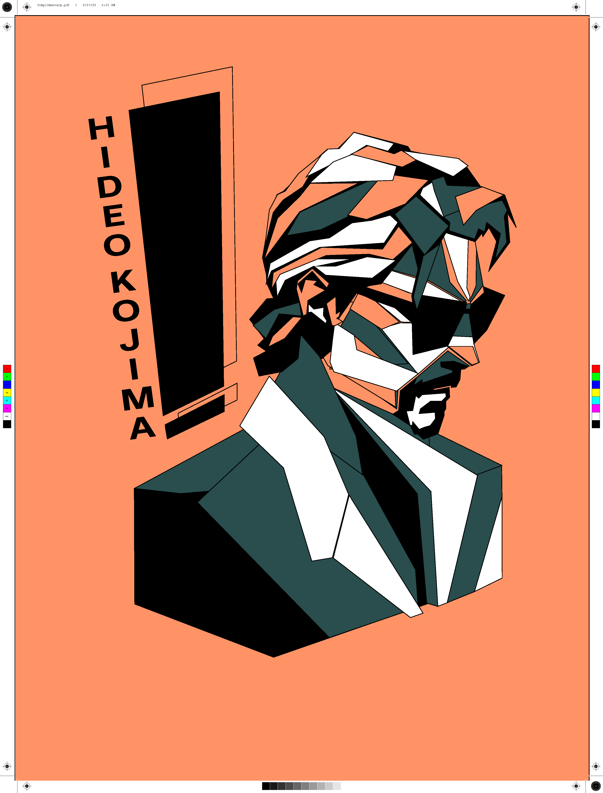

01
VisiaVerse
Brand Identity / Environmental Graphics / Concept Development
Professional Portfolio
I'm a graphic designer and production-minded creative working across branding, exhibit graphics, illustration, and front-end development. My background spans culinary leadership, print production, QA testing, and design, giving me a practical approach to solving creative problems. I enjoy building visual systems that are bold, functional, and memorable, while always looking for new ways to blend technology with storytelling.
View Projects
Brand Identity / Environmental Graphics / Concept Development

Retail Branding / Packaging / Promotional Design

Digital Art / Mixed Media / Photography
About
My work connects graphic design, production graphics, illustration, and front-end thinking. I like building systems that look strong, communicate clearly, and feel intentional.
Before moving deeper into design and technology, I spent years working in fast-paced kitchens. That background still shapes how I work today: stay organized, solve problems quickly, respect the details, and keep the final experience in mind.